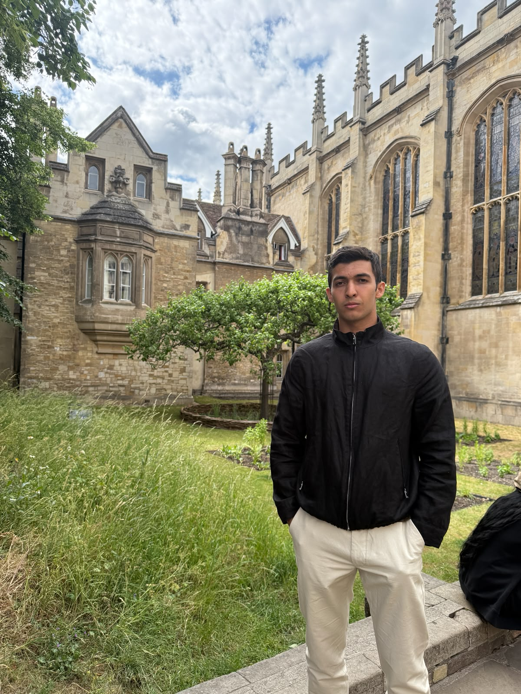

|
Arastun Mammadli
I am a first-year PhD student in Computer Science at the
University of Exeter,
supervised by Prof. Shiqiang Wang.
I am also a Research Assistant at the
UCL NLP Group,
working with Prof. Emine Yilmaz.
I hold a master's (Distinction) in Applied Computational Science and Engineering from
Imperial College London
and a BSc in Computer Science (Dean's List, top 5%) from the University of Exeter.
During my master's I interned at
Microsoft
and built a multi-agent multi-modal energy management system with Azure AI
(blog post).
My research goal is to make multi-model AI systems that involve many LLMs or agents work efficiently and reliably in practice.
I study how models and agents should be selected, composed, and coordinated under real-world constraints: including noisy and incomplete signals, and competitive dynamics.
Email /
Google Scholar /
GitHub /
LinkedIn /
CV
|

|
Cost-Optimal LLM Routing with Limited User Feedback under User Satisfaction Guarantees
Herbert Woisetschläger, Arastun Mammadli, Ryan Zhang, Shiqiang Wang
Preprint, arXiv:2606.19376, 2026
arXiv
We extend cost-optimal LLM routing to the realistic limited-feedback setting.
Our router provides formal SLA guarantees (e.g. ≥60% task accuracy) once it
converges from online learning, closing the gap left by prior work
(MESS+, NeurIPS 2025)
which assumed full feedback.
|
AgentSearchBench: A Benchmark for AI Agent Search in the Wild
Bin Wu*, Arastun Mammadli*, Xiaoyu Zhang, Emine Yilmaz
Preprint, arXiv:2604.22436, 2026 (*equal contribution)
arXiv /
webpage /
code /
dataset
Open agent environments (GPT Store, Google Cloud Marketplace, AgentAI Network) are
crowded with overlapping, semantically opaque agents. We formalise the agent search problem as
finding the right agent under user objectives and constraints, and introduce a benchmark
over real, noisy, publicly available agents.
|
News
- 2026-06 Preprint released: SLARouter.
- 2026-04 Preprint released: AgentSearchBench (co-author).
- 2026-05 Started PhD at the University of Exeter under Prof. Shiqiang Wang.
- 2025-11 Joined UCL NLP Group as a Research Assistant with Prof. Emine Yilmaz.
- 2025-06 Started Research Internship at Microsoft, Azure AI.
|
|